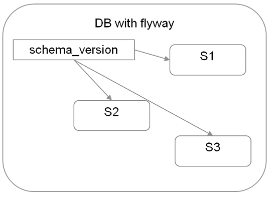

VIP Academy
Backend
AGENDA Eventu - Dzien 1
- 10.30 - 12.00 rozgrzewka
- 12.00 - 13.30 pierwszy wykład
- 13:30 - 14:15 obiad
- 14:15 - 16:30 praca w streamach 1
- 16:30 - 17:00 przerwa
- 17:00 - 19.00 praca w streamach 2
- 19:00 - 20:00 kolacja
- 20:00 - 22:30 praca w streamach 3
AGENDA Eventu - Dzien 2
- 6:00 - 6:40 rozgrzewka
- 7:00 - 7:30 sniadanie
- 7:30 - 12:00 praca w streamach
- 12:00 - 13:30 obiad
- 13:30 - 16:00 przerwa -
- 16:00 - 18:00 drugi wykład
- 18:00 - 20:30 praca w streamach
- 20:30 - kolacja grilowa
AGENDA Eventu - Dzien 3
- 6:00 - 6:40 rozgrzewka
- 7:00 - 7:30 sniadanie
- 7:30 - 12:00 Praca w streamach
- 12:00 -13:00 obiad
- 13:00 -15:00 Podsumowanie i zakończenie
Agenda Właściwa
Spring Framework
- Powstał w 2003 roku
- Szkielet tworzenia aplikacji dla języka Java
- Alternatywa dla programowania w EJB
- Oferuje dużą swobodę wytwarzania oprogramowania
- Bardzo dobra dokumentacja
- Gotowa implementacja wielu zagadnień
- Ogromne wsparcie dla Java EE
- Propaguje poprawny styl programowania
- Jest dostępny na zasadach open source
Spring Framework - moduły
- Składa się z kilku niezależnych od siebie modułów
- Moduły można ze sobą łączyć w celu uzyskania większej funkcjonalności
Spring Framework – podstawowy kontener
- Core
- podstawowa część frameworka, zawiera IoC i wstrzykiwanie zależności
- Beans
- eliminuje potrzebę programowego tworzenia singletonów
- oddziela zależność pomiędzy konfiguracją, specyfikacją a logiką programu
Spring Framework – podstawowy kontener
- Context
- umożliwia dostęp do obiektów zarządzanych przez framework
- pozwala na wydzielenie konfiguracji do plików *.properties
- udostępnia interface ApplicationContext
- EL - Spring Expression Language
@Value("#{applicationProperties['jakas.zmienna.z.pliku.properties']}")
private String zmienna;
Inversion of Control, Dependency Injection
- Paradygmat programowania, wzorzec projektowy, wzorzec architektoniczny.
- Zastosowanie
- w pojedynczych komponentach,
- w architekturze całego systemu (Spring Framework)
- W klasycznym podejściu obiekty są budowane statycznie, brak wpływu na ich postać.
- Odwracamy kontrolę – budowaniem obiektów zajmuje się framework
Inversion of Control, Dependency Injection
Wstrzykiwanie zależności – dla danego obiektu definiujemy, z jakich innych komponentów będzie korzystał, ale nie musimy się martwić o tworzenie instancji tych obiektów – zrobi to za nas framework, wykorzystywane w Springu.
@Service
public class CustomerServiceImpl {
private final CustomerMapper customerMapper;
private final CustomerDao customerDao;
@Autowired
public CustomerServiceImpl (CustomerMapper mapper, CustomerDao dao) {
this.customerMapper = mapper;
this.customerDao = dao;
}
Jak zacząć ze springiem?
- Podłączyć jary sciągnięte z internetu
-
W internecie poszukać dependency do POMa i podłączyć
-
Sciągnąć kompletny STS (Spring Tool Suite)
-
start.spring.io
Spring framework - podstawy
import org.springframework.boot.SpringApplication;
import org.springframework.boot.autoconfigure.SpringBootApplication;
import org.springframework.data.jpa.repository.config.EnableJpaRepositories;
@SpringBootApplication
public class BooksServerApplication {
public static void main(String[] args) {
SpringApplication.run(BooksServerApplication.class, args);
}
}
Spring framework - adnotacje
- @Component - podstawowa adnotacja, określa że klasa jest zarządzana przez Spring
- @Service - określa klasę zawierającą logikę biznesową
- @Repository - klasy DAO (Data Access Object), bezpośrednia komunikacja z DB
Wszystkie działają i robią to samo
Wyjątkiem jest @Repository, która dodatkowo konwertuje wyjątki dostawców bazy danych
Adnotacje pozwalają oddzielić od siebie różne warstwy aplikacji
Ułatwiają czytanie i analizowanie kodu
Spring framework - adnotacje
- @Controller - przetwarza żądania HTTP
- @Scope - umożliwia zmianę domyślnego czasu życia bean’a
- @PostConstruct - umożliwia wywołanie części kodu zaraz po utworzeniu obiektu
- @RequestMapping - używana w kontrolerze, mapuje adres URL na metodę
Adnotacje - przykład
@RequestMapping("/services")
@RestController
public class BooksRestService {
private final BookService bookService;
@Autowired
public BooksRestService(BookService bookService) {
this.bookService = bookService;
}
@RequestMapping(path = "/books", method = RequestMethod.GET)
public List<BookTo> findBooks(BookSearchCriteria bookSearchCriteria) {
return bookService.findBooks(bookSearchCriteria);
}
}
Maven
- Cel - Automatyzacja i standaryzacja procesu budowania
- Umożliwia opis procesu budowania oprogramowania
- Pozwala na zdefiniowanie zależności oraz zarządzanie nim
- Centralne repozytorium artefaktów - search.maven.org
- Lokalne repozytorium - zdef
Struktura projektu - convention over configuration

Konfiguracja projektu - POM (Project Object Model)
Maven build lifecycle
- Zadania wykonywane kaskadowo - wykonanie konkretnego kroku powoduje również wykonanie wszystkich poprzedzających
- mvn compile
- Deweloper najczęściej używa mvn clean install
- Poszczególne pluginy korzystają ze zdefiniownaych faz w celu wykonania własnej akcji, np. mvn surefire:test
Zarządzanie zależnościami - dependency management
- Każda biblioteka posiada unikalny identyfikator - groupId, artifactId, version
- Plik pom.xml zawiera sekcję dependencyManagement z listą zależności
- Zależności są aktualizowane w procesie budowania
- Centralne repozytorium artefaktów - search.maven.org
- Lokalne repozytorium - lokalizacja definiowana dla użytkownika

Dlaczego Spring Boot?

+ Konfiguracja = Aplikacja startowa
Spring Boot
- Convention over configuration
- Przy zerowej konfiguracji działająca aplikacja
- Prekonfiguracja możliwa dzięki adnotacjom @Conditional...
- Generator projektu - start.spring.io
Spring boot / Startery
- Zestawy zależności udostępniające prekonfigurowane funkcje Springa
- Np. dla aplikacji bazodanowej:
spring-boot-starter-data-jpa - Lista starterów -> spring-boot-starters
- Jak użyc? -> pom.xml
<dependency>
<groupId>org.springframework.boot</groupId>
<artifactId>spring-boot-starter-tomcat</artifactId>
<scope>provided</scope>
</dependency>Deployment aplikacji Spring Boot
- Embedded Server
- Przy użyciu np. startera
jar wynikowy (mvn clean install) zawiera jary Tomcataspring-boot-starter-web - Start klasy aplikacji uruchamia wbudowanego Tomcata (możliwe jest również użycie Jetty)
- Klasyczny serwer J2EE lub zewnętrzny Tomcat Zmiana pliku docelowego na war, niewielkie zmiany w pom.xml
ZADANIE: HelloWorld @ SpringBoot
k- Wygenerować projekt na stronie start.spring.io z zależnością na „Web”
- Rozpakować plik Zip do workspace w IDE
- Otworzyć IDE
- File->Import->Existing Maven Projects, wybrać lokalizację rozpakowanego projektu
- Dodać klasę z kontrolerem REST, metodą zwracającą String „Hello World” oraz mappingiem URL
- Skonfigurować port dla serwera -> application.properties
- Uruchomić klasę DemoApplication
- Przejść na stronę localhost:<port>/<mapping url> i sprawdzić działanie
Architektura wielowarstwowa
Efekt zastosowania SRP (Single Responsibility Principle)| Rola | Nazwa Warstwy | Odpowiedzialność |
|---|---|---|
| Komunikacja FrontEnd | REST Service | tłumaczenie requestów |
| Use Case | Service | logika biznesowa |
| Baza danych | Repository / DAO | persystencja |
Architektura wielowarstwowa
Czym jest Repository:A Repository represents all objects of a certain type as a conceptual set. It acts like a collection, except with more elaborate querying capability.[DDD]
RESTful Services
REST - REpresentation State Transfer. Roy Fielding 2000.
REST to nie jest architektura, tylko pewien zespół ograniczeń, który jeśli jest zastosowany do architektury to nadaje konkretne role danym, komponentom, hyperlinkom, ...
RESTful Services
Wymagania stawiane przez definicję REST:- system klient - server
- system bezstanowy
- system keszujący*
- system jednolicie dostępny*
- system wielowarstwowy
RESTful - spełniający wszystkie punkty powyższych założeń.
- Dane przesyłane między klientem a serwerem są pewną reprezentacją bytów biznesowych: XML, JSON
- Dane przemieszczają się do konkretnego adresata URI (Uniform Resource Identifier)
- Dane dodatkowo posiadają pewien kwalifikator akcji, mający odpowiednik w świecie protokołu HTTP
| Akcja | Metoda HTTP |
|---|---|
| CREATE | POST |
| RETRIEVE | GET |
| UPDATE | PUT |
| DELETE | DELETE |
RESTful API
@RequestMapping(path = "/cars", method = RequestMethod.GET)
public List<CarTo> findAllCars() { ... }
@RequestMapping(path = "/car", method = RequestMethod.POST)
public CarTo addCar(@RequestBody CarTo car) { ... }
@RequestMapping(path = "/car", method = RequestMethod.PUT)
public CarTo updateCar(@RequestBody CarTo car) { ... }
@RequestMapping(path = "/car/{id}", method = RequestMethod.DELETE)
public boolean deleteCar(@PathVariable("id") Long id) { ... }
ZADANIE: have a REST... Service
- Przejść na branch step-2
- Uruchomić aplikację poprzez klasę BooksServerApplication
- Zwrócić uwagę na komunikat błędu i dodać brakującą implementację dla BookService
- Ponownie uruchomić aplikację
- W przeglądarce przejść na stronę localhost:8888/services/books?title=<tytul>&author=<author>
- Zweryfikować wynik
- Doimplementować listę książek i metodę wyszukiwania w tej liście
- Ponownie wystartować aplikację i przejść na stronę localhost:8888/services/books?title=<tytul>&author=<author>
- Poprzez różne wartości dla parametrów tytuł i autor zweryfikować działanie wyszykiwania.
Relacyjne bazy danych a świat obiektowy
- Aplikacje tworzą, zarządzają i przechowują informacje strukturalne
- Programiści wybierają języki obiektowe
- Zapisywanie i pobieranie danych wymaga znajomości SQL

Dostęp do danych za pomocą JDBC
- Bardzo dobrze znane API
- Wymaga dobrej znajomości SQL
- Łącze do baz danych dla języka Java
JDBC - jak to działa
@Service public class CustomerServiceImpl {
private static final String FIND_ALL_LIBRARIES_IN_CITY_SQL =
"SELECT l.id, l.name, l.address_id FROM Library l, Address a
WHERE l.address_id = a.id AND a.city = :city";
@Autowired private NamedParameterJdbcOperations jdbcTemplate;
@Autowired private LibraryRowMapper mapper;
public List<LibraryTO> findAllLibrariesInCity (String cityName) {
SqlParameterSource params = new MapSqlParameterSource("city", cityName);
return jdbcTemplate.query(FIND_ALL_LIBRARIES_IN_CITY_SQL, params, mapper);
}
- Konieczność definiowania zapytań SQL
- Spring NamedParameterJdbcOperations do wykonywania instrukcji SQL
- Spring RowMapper do mapowania wyniku zapytania na obiekt
JDBC - spring RowMapper
Implementacja interfejsu RowMapper
@Component
public class LibraryRowMapper implements RowMapper<LibraryTO> {
@Override
public LibraryTO mapRow(ResultSet rs, int rowNum) throws SQLException {
LibraryTO library = new LibraryTO();
library.setId(rs.getLong(1));
library.setName(rs.getString(2));
library.setAddress(mapAddressById(rs.getLong(3)));
return library;
}
private AddressTO mapAddressById(Long addressId) {
if (addressId != null && Long.compare(0, addressId) != 0)
return new AddressTO(addressId));
return null;
}
JDBC - wady
- Wymaga pisania dużej ilości dodatkowego kodu
- Trudne mapowanie wyniku SQL na obiekty biznesowe
- Kod związany z trwałością danych narażony na błędy programistów
- Brak przenośności kodu, implementacja zależna od bazy danych
- Implementacja bardzo trudna w utrzymaniu
- Ewentualne błędy w zapytaniach SQL widoczne dopiero w trakcie działania programu
- Kod nietestowalny
Odwzorowanie obiektowo-relacyjne
- Przekształcenie obiektów w encje bazy danych i odwrotnie
- Przekształcenie połączeń między obiektami na relacje bazy danych
- Przekształcenie obiektowego języka zapytań na SQL
- Spójny sposób obsługi różnych baz danych - przenośność
- Zapewnienie trwałości obiektów
- Ochrona programisty przed czasochłonnym SQL-em
- Pozwala skupić się na implementacji logiki biznesowej
- Zapewnienie stałych technik optymalizacyjnych
- Oddzielenie warstwy dostępu do danych od biznesu
Odwzorowanie obiektowo-relacyjne
Niedopasowanie paradygmatów relacyjno-obiektowych| Podobieństwa | Różnice |
|---|---|
| Klasy i tabele | Szczegółowość |
| Właściwości i kolumny | Dziedziczenie (java) |
| Instancje i wiersze | Kolekcje (java) |
| Identyczność (==, equals vs PK) | |
| Nawigacja po grafie obiektów |
Podstawowym zadaniem ORM jest rozwiązanie wrodzonych niezgodności pomiędzy obiektami i bazami danych
Hibernate
- Gavin King rozpoczął prace nad biblioteką pod koniec 2001 roku
- Zespół na bieżąco realizował prośby użytkowników
- Zgodny ze standardem JPA**
- Możliwość traktowania Hibernate jako dostawcy trwałości
- Możliwość używania bibliotek JPA, takich jak np. Spring-Data-Jpa
- Oddziela kod biznesowy od warstwy dostepu do danych
Hibernate a development

TODO? - Hibernate a JPA
TODO? - Mapowanie JPA
Encja a POJO
public class LibraryEntity {
private String name;
private String domain;
public LibraryEntity () {
}
public String getName() { return name; }
public void setName(String name) { this.name = name; }
public String getDomain() { return domain; }
public void setDomain(String domain) { this. domain = domain; }
}
Encja a POJO
@Entity
public class LibraryEntity {
@Id
private Long id;
@Column(name = "name", length = 30, nullable = false)
private String name;
@Column(name = "domain", length = 5, nullable = true)
private String domain;
public LibraryEntity () {
}
// getters and setters
}
Adnotacje dla Encji
@Entity
@Table(name = "LIBRARY", schema = "public")
@Access(AccessType.FIELD)
public class LibraryEntity {
@Id
@GeneratedValue(strategy = GenerationType.AUTO)
private Long id;
@Column(name = "name", length = 30, nullable = false)
private String name;
@Lob
@Column(nullable = false)
private String description;
private String city;
@Access(AccessType.PROPERTY)
public String getCity () { ... }
public LibraryEntity () { }
}
Adnotacje dla Encji
- @Entity - oznacza klasę, odzwierciedla tabelę BD
- @Entity(name="…") - nigdy nie używać
- @Access - decyduje gdzie umieszczać adnotacje
- @Table - zmienia domyślną nazwę tabeli BD
- @Id - oznacza atrybut jako klucz główny
- @GeneratedValue - auto generacja wartości PK
- @Column - pozwala ustawić wartości kolumny
- @Lob - typ dla dużych danych tekstowych
- @Enumerated(EnumType.STRING) - enumy
- @Transient - wyłączenie pola z persystencji
- @MappedSuperclas - zwykłe dziedziczenie
Typy Embedded
@Embeddable
public class PersonalData {
private String firstName;
private String lastName;
@Column (columnDefinition=" DATE", nullable = false)
private Date birthDate;
public PersonalData() {
}
// getters & setters
}
Typy Embedded
@Entity
public class AuthorEntity {
@Embedded
@AttributeOverrides({
@AttributeOverride(
name = "firstName",
column = @Column(
name = "FIRST_NAME",
nullable = false)),
@AttributeOverride(
name = "lastName",
column = @Column(
name = "LAST_NAME",
nullable = false))})
vate PersonalData personalData;
...
}
Generowanie kluczy głównych - Strategie
@Id
@GeneratedValue(strategy = GenerationType.AUTO)
private Long id;
@Id
@SequenceGenerator(name = "bookGen", sequenceName = "BOOK_SEQ")
@GeneratedValue(strategy = GenerationType.SEQUENCE,
generator = "bookGen")
private Long id;
Generowanie kluczy głównych - Strategie
@Id
@TableGenerator(
name="bookGen",
table="ID_GEN", // opcjonalnie
pkColumnName="GEN_KEY", // opcjonalnie
valueColumnName="GEN_VALUE", // opcjonalnie
pkColumnValue="BOOK_ID_GEN") // opcjonalnie
@GeneratedValue(strategy = GenerationType.TABLE, generator = "bookGen")
private Long id;
Cykl życia encji
- Adnotacje jako metadane opisujące mapowanie pomiędzy obiektem a bazą
- Cykle życia encji:
- nowy (new) - brak identyfikatora i powiązania z kontekstem persystencji
- zarządzany (managed) – encja posiada ID i jest powiązana z kontekstem persystencji
- odłączony (detached) – encja posiada ID ale nie jest powiązana z kontekstem persystencji
- usunięty (removed) – tak jak zarządzany, ale oznaczona jako „do usunięcia”
Listenery
- @PrePersist
- @PostPersist
- @PreUpdate
- @PostUpdate
- @PostLoad
- @PreRemove
- @PostRemove
Listenery wewnątrz encji
@Entity
@Table(name = "CUSTOMER_CARD")
public class CustomerCardEntity {
@Id
@GeneratedValue(strategy = GenerationType.AUTO)
private Long id;
@Column(nullable = false)
private String serialNumber;
@PrePersist
public void generateDefaultSerialNumber() {
serialNumber = new SerialNumberGenerator().generate();
}
}
Listenery stand alone
@Entity
@Table(name = "CUSTOMER_CARD")
@EntityListeners(CustomerCardListener.class)
public class CustomerCardEntity {
@Id
@GeneratedValue(strategy = GenerationType.AUTO)
private Long id;
@Column(nullable = false)
private String serialNumber;
}
Listenery stand alone
public class CustomerCardListener {
@PrePersist
public void generateDefaultSerialNumber
(CustomerCardEntity customerCardEntity) {
String serialNumber = new SerialNumberGenerator().generate();
customerCardEntity.setSerialNumber(serialNumber);
}
}
Entity Manager
- Podstawowy element całej warstwy persystencji
- Zarządza transakcjami i encjami
String unitName = "MyPersistenceUnit";
// utwórz
EntityManagerFactory emf = Persistence.createEntityManagerFactory(unitName);
EntityManager em = emf.createEntityManager();
// zrób co masz do zrobienia
zrobCos(em);
// zamknij
em.close();
emf.close();
Entity Manager - dostęp do danych
- Podstawowy element całej warstwy persystencji
- Zarządza transakcjami i encjami
// zapis
Product banan = new Product(1, "banan", "owoce");
em.persist(banan);
// odczyt
Product bananFromDB = em.find(Product.class, 1);
// usunięcie
Product bananFromDB = em.find(Product.class, 1);
em.remove(bananFromDB);
// zapytanie
Product product = em.createQuery(
"SELECT p FROM Product p WHERE p.category = :cat_param", Product.class)
.setParameter("cat_param", "owoce")
.getSingleResult();
Relacje
- @OneToOne – encja A może mieć relację do dokładnie jednej encji B
- @OneToMany – encja A może mieć relację do kilku encji B
- @ManyToOne – wiele encji A może mieć relację do dokładnie jednej encji B
- @ManyToMany – wiele encji A może mieć relację do wielu encji B
- Tworzy tabelę asocjacyjną
Relacje
- Wyróżniamy relacje:
- jednokierunkowe
- dwukierunkowe
@OneToOne - jednokierunkowa
@Entity
public class User {
@OneToOne(
cascade = CascadeType.ALL, // default: empty
fetch = FetchType.LAZY, // default: EAGER
optional = false) // default: true
private Address address;
}
@Entity
public class Address {
}
@OneToOne - dwukierunkowa
@Entity
public class User {
@OneToOne
@JoinColumn(name = "BOOK_FK")
private Address address;
}
@Entity
public class Address {
@OneToOne(mappedBy = „address”)
private User user;
}
- mappedBy określa właściciela relacji
- użytkownik ma klucz obcy do adresu
- bez mappedBy klucz obcy po obu stronach
@OneToMany / @ManyToOne - jednokierunkowa
@Entity
public class User {
@OneToMany(
cascade = CascadeType.ALL, // default: empty
fetch = FetchType. EAGER) // default: LAZY
@JoinColumn(name = "user_id")
private Collection<Address> addresses;
}
@Entity
public class Address {
}
- bez @JoinColumn utworzona zostanie tabela asocjacyjna
@OneToMany / @ManyToOne - dwukierunkowa
@Entity
public class User {
@OneToMany(mappedBy = "user")
private Collection<Address> addresses;
}
@Entity
public class Address {
@ManyToOne
@JoinColumn(name = "BOOK_FK", nullable = false)
private User user;
}
- mappedBy tak samo jak @JoinColumn usuwa tabelę asocjacyjną
@ManyToMany - jednokierunkowa
@Entity
public class User {
@ManyToMany(
cascade = CascadeType.ALL, // default: empty
fetch = FetchType. LAZY) // default: EAGER
@JoinTable(name = "USER_ADDRESS",
joinColumns = {@JoinColumn(
name = "BOOK_ID",
nullable = false,
updatable = false)},
inverseJoinColumns = {@JoinColumn(
name = "AUTHOR_ID",
nullable = false,
updatable = false)})
private Collection<Address> addresses;
}
@ManyToMany - dwukierunkowa
@Entity
public class Address {
@ManyToMany(mappedBy = "book")
private Collection<User> users;
}
- bez mappedBy dwie tabele asocjacyjne zostaną stworzone
Kaskady
- Entity Manager dokonuje zmian na danej encji, np. persist
- Kaskady umożliwiają operację na encji połączonej relacją
- PERSIST
- MERGE
- REMOVE
- ALL
Kaskady
@Entity
@Table(name = "BOOK")
public class BookEntity {
@OneToOne(cascade = CascadeType.ALL, mappedBy = "book")
private BookSpoilerEntity bookSpoiler;
}
Dziedziczenie
- Naturalna właściwość obiektów
- Nie ma zastosowania w relacyjnych bazach danych
- Rozwiązaniem Hibernate są trzy strategie:
- SINGLE_TABLE
- TABLE_PER_CLASS
- JOINED
- Możliwość wykonywania zapytań polimorficznych
Strategie: Single Table
- Podobne obiekty przechowywane są w jednej tabeli
- Rekordy rozróżniane są przez tzw. Dyskryminator
- Wydajne wyszukiwanie – brak złączeń
- Puste kolumny (różnice między obiektami)
- Problem z warunkiem Not-Null.
Strategie: Single Table
@Entity
@Table(name = "AUTHOR")
@DiscriminatorColumn(name = "TYPE", length = 6,
discriminatorType = DiscriminatorType.STRING)
@Inheritance(strategy = InheritanceType.SINGLE_TABLE)
public abstract class AuthorEntity {
@Id
@GeneratedValue(strategy = GenerationType.AUTO)
protected Long id;
@Column(nullable = true, length = 30)
protected String nickName;
}
Strategie: Single Table
@Entity
@DiscriminatorValue("WRITER")
public class WriterEntity extends AuthorEntity {
@Enumerated(EnumType.STRING)
private LiteraryGenre literaryGenre;
}
Strategie: Single Table
@Entity
@DiscriminatorValue("PROFES")
public class ProfessorEntity extends AuthorEntity {
@Column(nullable = true)
private String university;
}
Strategie: Single Table

Strategie: Table per class
- Oddzielna tabela bazy danych na jedną encję
- Brak porblemów z warunkami Not-Null
- Redundancja wspólnych atrybótów
- Niewydajne zapytania SQL przy zapytaniach polimorficznych
Strategie: Joined
- Bazowe obiekty zapisane są w jednej tabeli
- Różnice między obiektami zapisywane są w oddzielnych tabelach
- Znormalizowana baza danych
- Brak redundancji
- Wymagane złączenie tabel przy zapytaniach polimorficznych
Strategie: Joined
@Entity
@Table(name = "BOOK_EXEMPLAR")
@Inheritance(strategy = InheritanceType.JOINED)
public abstract class BookExemplarEntity {
@Id
@GeneratedValue(strategy = GenerationType.AUTO)
protected Long id;
@Column(nullable = false, length = 15, unique = true)
protected String serialNumber;
}

Strategie: Joined
@Entity
@Table(name = "PAPER_BOOK")
@PrimaryKeyJoinColumn(name = "book_ex_id", referencedColumnName = "id")
public class PaperBookExemplarEntity extends BookExemplarEntity {
private int pagesCount;
@Enumerated(EnumType.STRING)
@Column(nullable = false)
private PaperSize paperSize;
@Enumerated(EnumType.STRING)
@Column(nullable = false)
private BookCover bookCover;
}

ZADANIE: Annotation processing
- Przejść na branch step-3
- Zaznajomić się z modelem encji
- Uruchomić test BookServiceImplTest i sprawdzić wyniki
- Poprawić mapowanie JPA dla encji
- Uruchomić ponownie test BookServiceImplTest i zweryfikować poprawność wszystkich przypadków testowych
Oddzielenie logiki domeny od obsługi trwałości
Zastosowanie wzorca Data Access Object (DAO)
Dao - interfejs
public interface Dao<T> {
void create(T entity);
T get(Serializable id);
T load(Serializable id);
List<T> getAll();
void update(T entity);
void saveOrUpdate(T entity);
void delete(T entity);
void delete(Serializable id);
void deleteAll();
long count();
boolean exists(Serializable id);
}
Dao - implementacja
@Transactional(Transactional.txType.SUPPORTS)
public abstract class AbstractDao<T> implements Dao<T> {
@Autowired
private SessionFactory sessionFactory;
private Class<T> domainClass;
protected Session getSession() {
return sessionFactory.getCurrentSession();
}
@Override
public void create(T entity) {
getSession().save(entity);
}
@Override
@SuppressWarnings("unchecked")
public T get(Serializable id) {
return (T) getSession().get(getDomainClass(), id);
}
@Override
public List<T> getAll() {
return getSession().createQuery("from " + getDomainClassName()).list();
}
}
Dao - implementacja
@Repository
public class LibraryDaoImpl extends AbstractDao<LibraryEntity> {
@SuppressWarnings("unchecked")
public List<LibraryEntity> findByName(String name) {
return getSession()
.createQuery("from LibraryEntity l where l.name like :name")
.setString("name", name + "%")
.list();
}
}
Obiekty DAO
- Stanowią interfejs do komunikacji aplikacji z bazą danych
- Nie zawierają logiki biznesowej
- Oddzielają logikę biznesową od dostępu do danych
- Powodują powstanie kolejnej warsty w aplikacji
No to jaka właściwie jest różnica między DAO a Repository?
ZADANIE: Find it
- Przejść na branch step-4
- Zrealizuj wyszukiwanie książek dla zadanych kryteriów z wykorzystaniem Criteria API
- Podążaj za wskazówkami prowadzącego. (live coding)
Transakcje
- Zbiór operacji na bazie danych stanowiących jedną całość
- Zmieniają spójny stan bazy danych w inny spójny stan
- Cechy transakcji:
- Atomowość (Atomicity)
- Spójność (Consistency)
- Izolacja (Isoation)
- Trwałość (Durability)
Transakcje - Entity Manager
// rozpoczyna transakcję
em.getTransaction().begin();
// wykonanie operacji
Product prodFromDb = em.find(Product.class, 1);
prodFromDb.setCategory("newCategory");
// zatwierdzenie transakcji
em.getTransaction().commit();
// ewentualne wycofanie transakcji
em.getTransaction().rollback();
- Najlepszy sposób budowania transakcyjnych aplikacji Spring
- Brak powielonego kodu
- Bardzo łatwa konfiguracja
- Propagacja, izolacja, timeout, readOnly, rollbackFor itp.
- Możliwość zdefiniowania na całej klasie i metodzie
@Transactional
@Service
@Transactional(readOnly = true)
public class LibraryServiceImpl implements LibraryService {
@Autowired
private LibraryRepository libraryRepository;
@Autowired
private MapperFacade mapper;
@Override
public List<LibraryTO> findAllLibraries () {
List<LibraryEntity> libraries = libraryRepository.findAll();
return mapper.mapAsList(libraries, LibraryTO.class);
}
}
TODO? - Przyklad z XMLem?
Flyway
- Narzędzie do płynnej migracji bazy danych
- Umożliwia kontrolę wersji bazy danych poprzez skrypty migracyjne
- Skrypty migracyjne są wykonywane po czym w specjalnej tabeli zapisane są ich skróty
- Dostęp poprzez API, plugin Mavena oraz narzędzie CLI 
ZADANIE: Save it
- Przejść na branch step-5
- Zaimplementuj metodę save w klasie BookServiceImpl
- Zaimplementuj mapper przepisujący atrybuty z obiektu TO do encji.
- Zapewnij transakcyjność metody używając w odpowiednim miejscu adnotacji @Transactional
- Zweryfikuj działanie testów BookServiceImplTest
Po co testy?
Jakie testy warto tworzyć
- Jednostkowe
- Integracyjne
- Komponentowe
- E2E
- Akceptacyjne
Jakie narzędzia wykorzystywać przy tworzeniu testów
- Mockowanie zależności
- Asercje
- given-when-then
- Continuous Integration
- Argument Captors
- ...
Test Jednostkowy z wykorzystaniem MockMVC
@EnableWebMvc
@ComponentScan("org.itsurvival.books.rest")
public static class BooksRestServiceTestConfiguration {
@Bean
public BookService bookService() {
return Mockito.mock(BookService.class);
}
}
private MockMvc mockMvc;
@Autowired
private WebApplicationContext webApplicationContext;
@Autowired
private BookService bookService;
@Captor
private ArgumentCaptor<BookSearchCriteria> bookSearchCriteriaCaptor;
@Captor
private ArgumentCaptor<BookTo> bookCaptor;
@Test
public void shouldAddNewBook() throws Exception {
// given
byte[] content = readFileToBytes(
"classpath:org/itsurvival/books/rest/newBook.json");
when(bookService.addBook(any(BookTo.class)))
.thenAnswer(args -> args.getArguments()[0]);
// when
mockMvc.perform(post("/services/book")
.content(content)
.contentType(MediaType.APPLICATION_JSON))
// then
.andExpect(status().isOk())
.andExpect(jsonPath("$.title", is("Test title")));
verify(bookService).addBook(bookCaptor.capture());
BookTo book = bookCaptor.getValue();
assertThat(book.getTitle()).isEqualTo("Test title");
assertThat(book.getAuthor()).isEqualTo("Test author");
assertThat(book.getYear()).isEqualTo(2008);
assertThat(book.getGenre()).isEqualTo(Genre.IT);
assertThat(book.getVersion()).isEqualTo(0L);
assertThat(book.getId()).isNull();
}
ZADANIE: Test it
- Przejść na branch step-6
- Zapoznaj się z implementacją BookRestServiceTest
- Brakuje w niej implementacji pewnych testów.
- Dodaj ciała brakujących testów bazując na przykładach pozostałych metod.